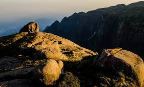
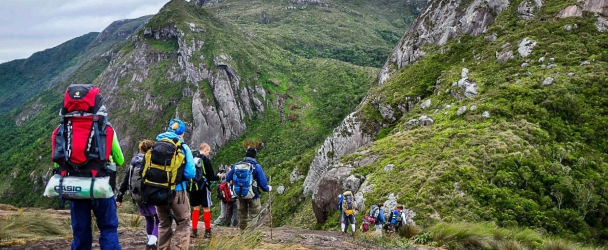

Nossas Trilhas
Aventure-se pelos caminhos de Teresópolis.

Trilha da Pedra do Sino
Dificuldade: Alta
Descrição: Uma das trilhas mais famosas, levando ao ponto mais alto da Serra dos Órgãos, com uma vista deslumbrante.

Trilha Suspensa do Parque Nacional
Dificuldade: Leve
Descrição: Ideal para famílias e iniciantes, esta trilha elevada permite uma imersão segura na Mata Atlântica.